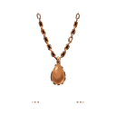
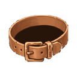
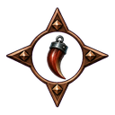
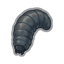
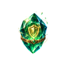
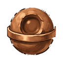
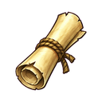

FORGEKIN
Home
Guide
Items
Recipes
Professions
Zones
English
Türkçe
Items
Gear
Weapons
Shields
Quivers
Tomes
Helmets
Chest Armor
Gloves
Pants
Boots
Accessories and Charms
Rings
Necklaces

Earrings
Belts

Charms

Gathering
Ores
Fish
Herbs
Dynamite
Baits

Seeds
Processed Materials
Ingots
Softening Agents
Master Meals
Upgrading
Quality Upgrade Materials
Upgrade Stones
Protection Stones

Essences
Repair Papers
Dungeons
Dungeon Keys
Dungeon Cores

Tools
Gathering Tools
Workshop Tools
Other
Boxes
Pet Shards
Scrolls

Tokens
↑